Khizar Studio / The Open Frame / Desktop + Mobile / Proposed art direction, not implemented
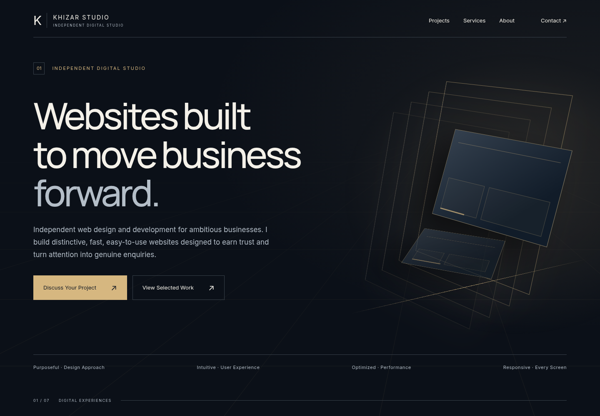
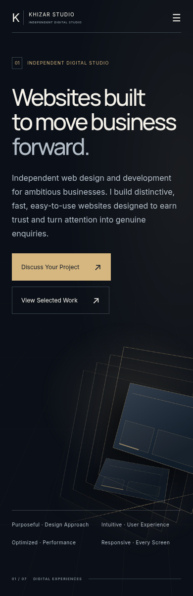
A reading rail and a designed architectural stage. Preserve the actual model and its controller.
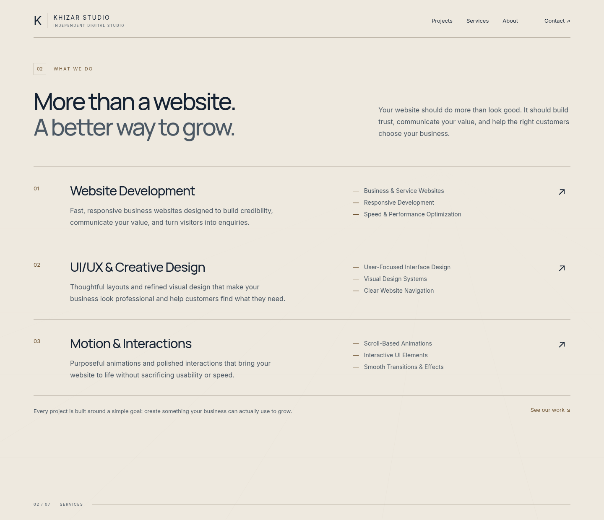
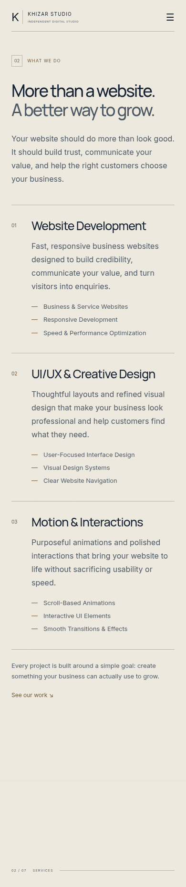
One object transforms through capabilities; its rail becomes an ivory editorial services layout.
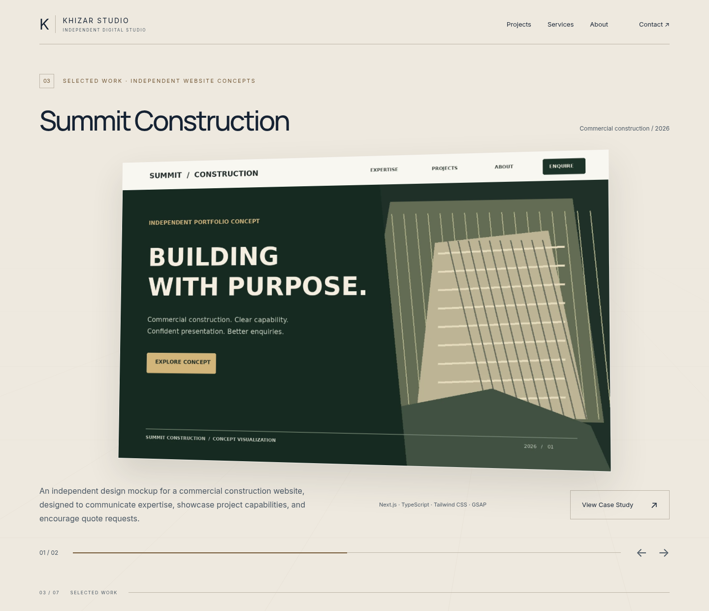
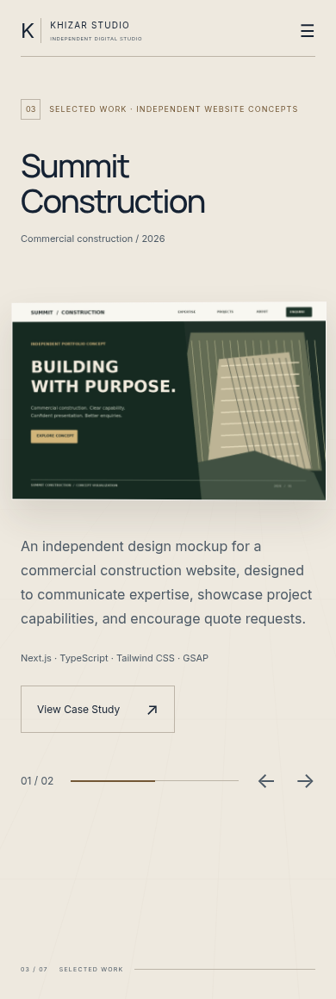
Large actual website screens. Stable disclosure, description and links outside the perspective wrapper.
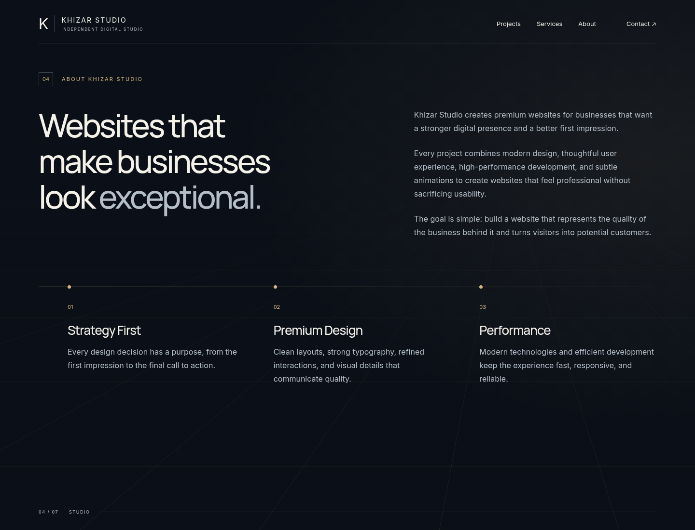
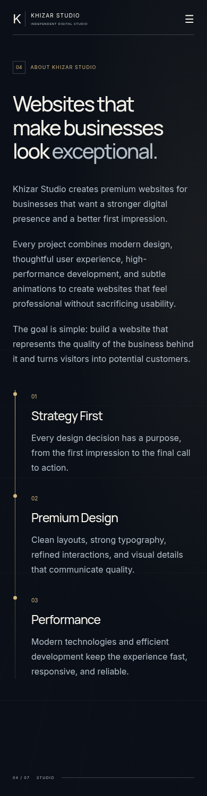
Editorial studio copy and values connected by one axis. No enclosing card grid.
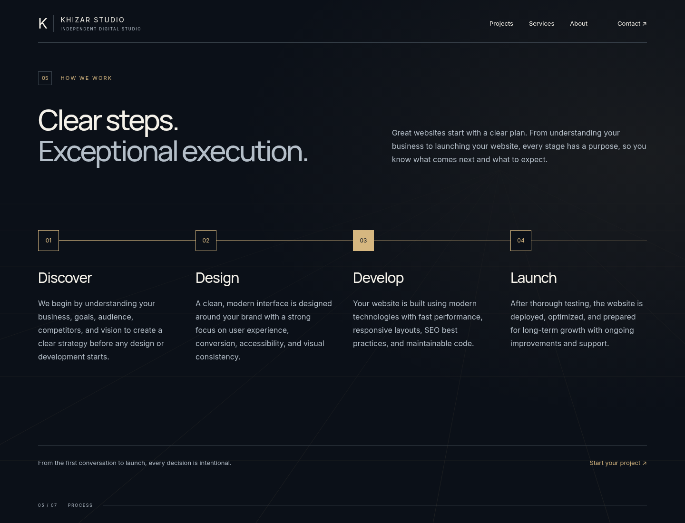
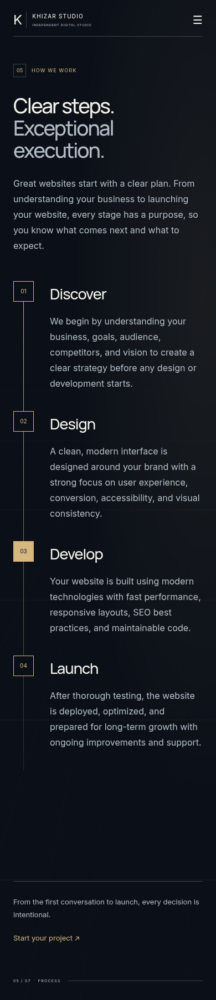
One route, four nodes, all descriptions available. Marker movement carries progress.
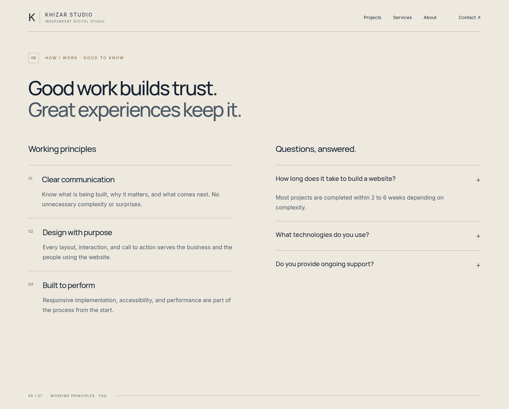
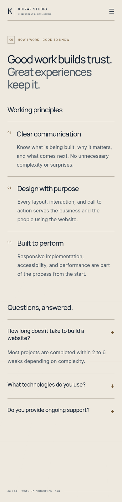
A deliberate ivory pause. Clear rules, real principles and an accessible accordion.
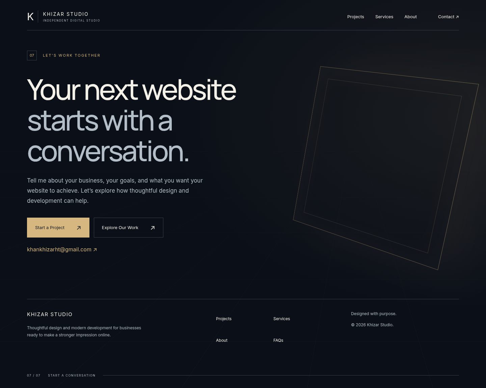
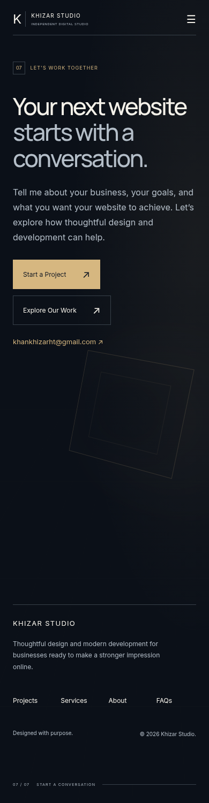
The opening frame returns around an immediate invitation and integrated footer.